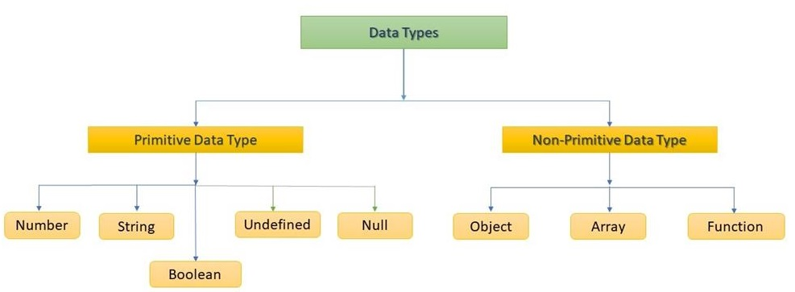

Introduction
A data type in JavaScript is a container that stores a specific type of data. In this article, we learn about various data types in JavaScript and how to work with them.
- Number: This data type is used to represent numerical values. Numbers can be integers (whole numbers) or floating-point numbers (decimal numbers).
- String: This data type is used to represent textual data. Strings are sequences of characters enclosed in quotes (either single or double).
- Boolean: This data type is used to represent logical values. Boolean values can be either true or false.
- Undefined: This data type represents a variable that has not been assigned a value.
- Null: This data type represents a deliberate absence of any object value.
- Object: This data type represents complex data structures, including arrays, functions, and objects.
- Symbol: This data type represents unique values that can be used as object keys.
JavaScript is dynamic like any other programming language, so you don't need to declare the variable type. If I am talking about C, C++, C#, Java, etc., you must define the datatype when you declare the variable. But The left-side variable takes on the data type of whatever value you gave the right-hand side.
Data type in JavaScript
The data type is a primary data type that can be used in a program. JavaScript provides different data types to hold different types of values. There is no need to specify the variable type because the JavaScript Engine dynamically uses it. The different types of data types in JavaScript are shown in the flowchart below,
There are two significant data types in JavaScript,
- Primitive data types in JavaScript
- Non-primitive data types/ composite data types in JavaScript
Primitive Data Types in JavaScript
- Number represents a numeric Value.
- String is a sequence of Characters.
- Boolean represents Boolean value, either True or False.
- Undefined represents an undefined value.
- Null represents no value.
Note. Data types in JavaScript can be defined at run-time.
Number data type in JavaScript
The number datatype represents the numeric value; the number type represents integer, float, or decimal. It can hold any value. You need to use var here to specify the datatype. Suppose I declared a variable.
Var x=10;
And after that, I assign a string value like this x=" sagar" so you will know the data types are changed at run-time.
For example, you can assign values like 10,10.2, which means even if you assign a floating-point number to a variable, it is treated like several data types.
Code Example
Output:-
String data type in JavaScript
The string is a sequence of characters; the character must represent in single ('')or double quotations ("") in JavaScript. You can assign a single character or multiple characters in JavaScript String.
Output:-

Boolean data type in JavaScript
The boolean datatype can only have two values True or False. Boolean is used to test conditional statements in JavaScript. You also can assign true and false values to the Boolean datatype in JavaScript.
Example:-
Output:-
Undefined data type in JavaScript
It is called undefined if you declare a variable but don't assign the value. The variable has no value, but it will have later on.
Null in JavaScript
if a variable can not contain a value other than null, it is called a null datatype.
Non-Primitive Data Type in JavaScript
- Object:Key-Value pair.
- Array:A group of similar values.
Object in JavaScript
Any data type which is not primitive is called Object. JavaScript follows literal object syntax, a list of zero or more pairs of property names and associated values of an object enclosed with {}. The object is a collection of properties. The object holds the value in Key-Value format.
Here is a detailed article on Objects in JavaScript with various options.
Array in JavaScript
An array is a collection of data items stored under a single name. Array provides a framework for announcing and accessing multiple data Objects that should have only one identifier, thereby simplifying the data management task.
Example:-
Output:-
Explanation
In the above array example program, we use JavaScript code inside the HTML code. So, first, we print a heading into the <h2> tag "First Array Example Program". Then we print two paragraphs by using <p> tag, As "First Paragraph" and "JavaScript code starts here....". After that, we write JavaScript code as <script> tag. Inside <script> tag, we first define an array named stu. In the next line, we access the array elements bt "document.write(stu);" line prints array elementsseparated by commas as the output. We print a paragraph in the last line" JavaScript code ends here....".